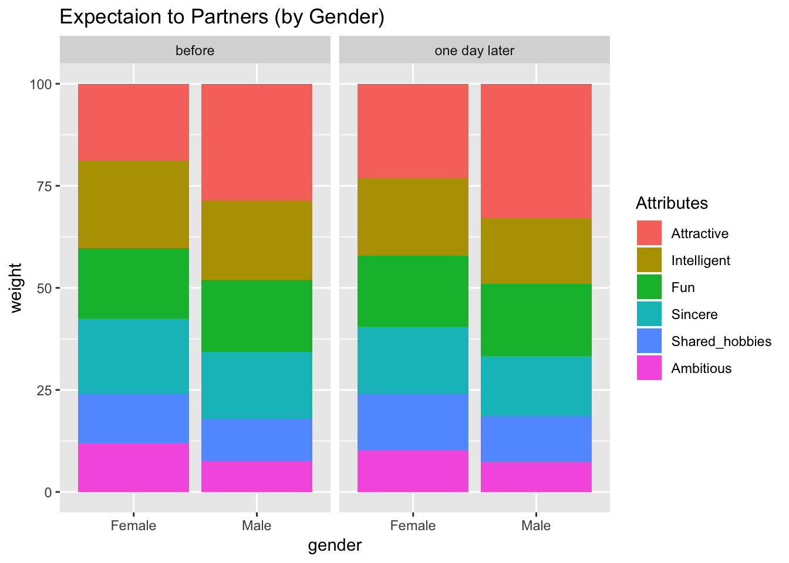
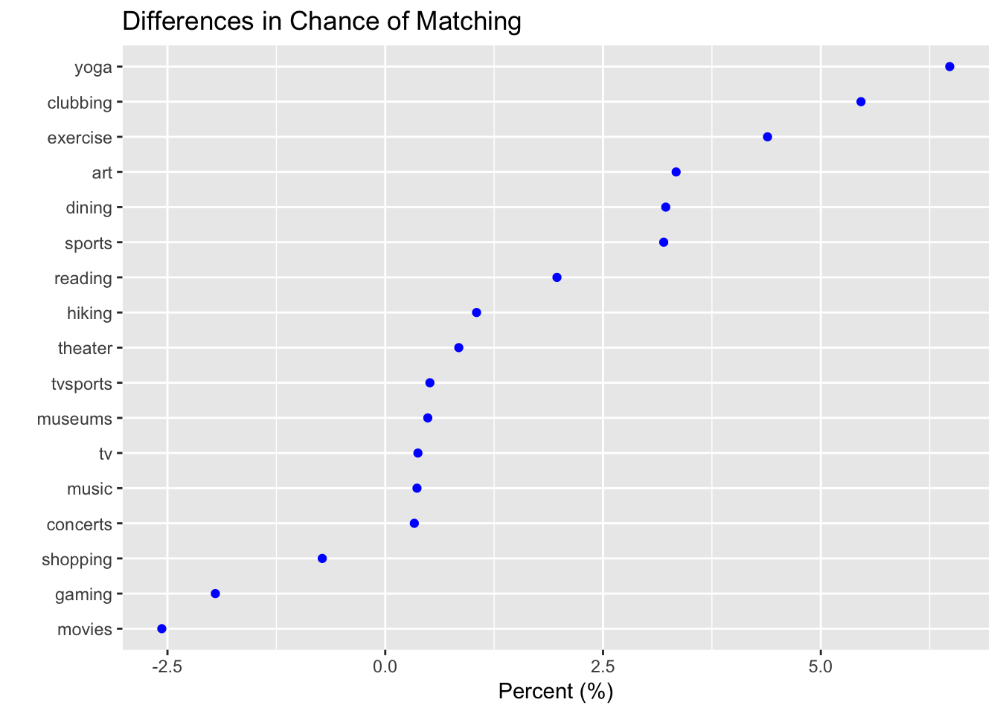
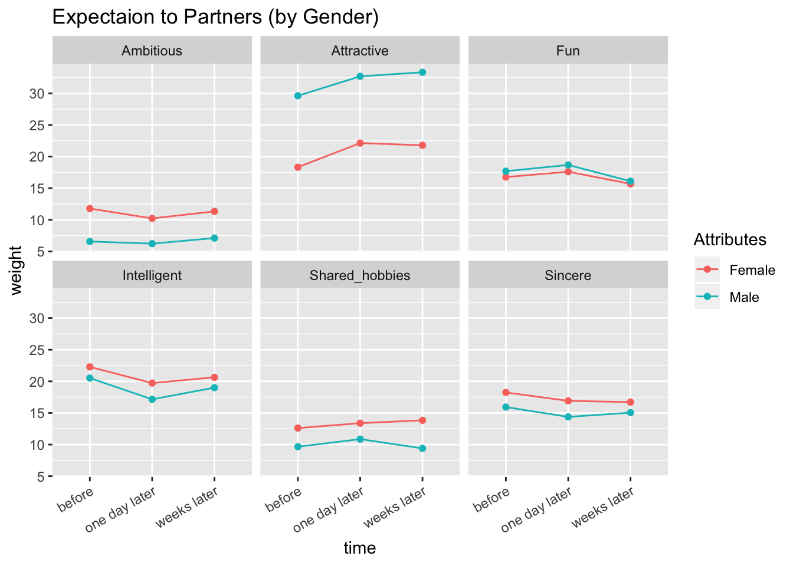
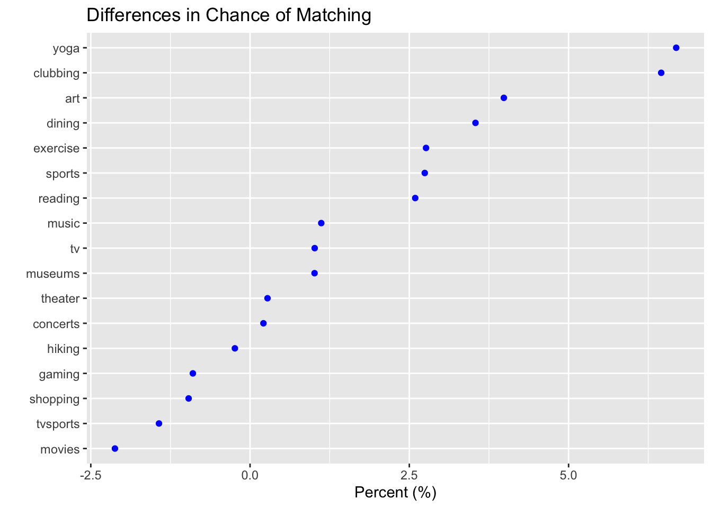
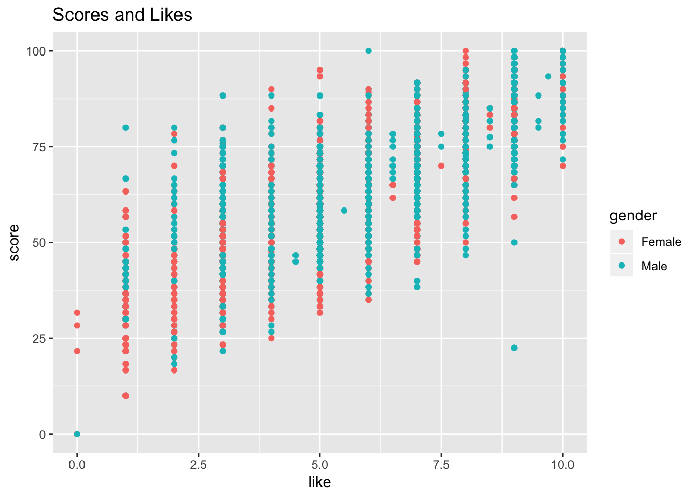
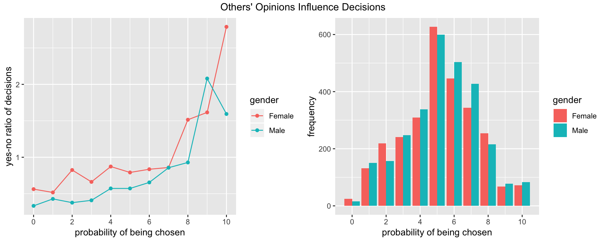
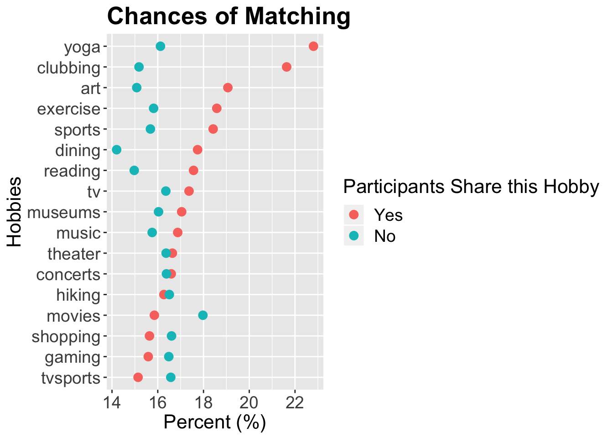
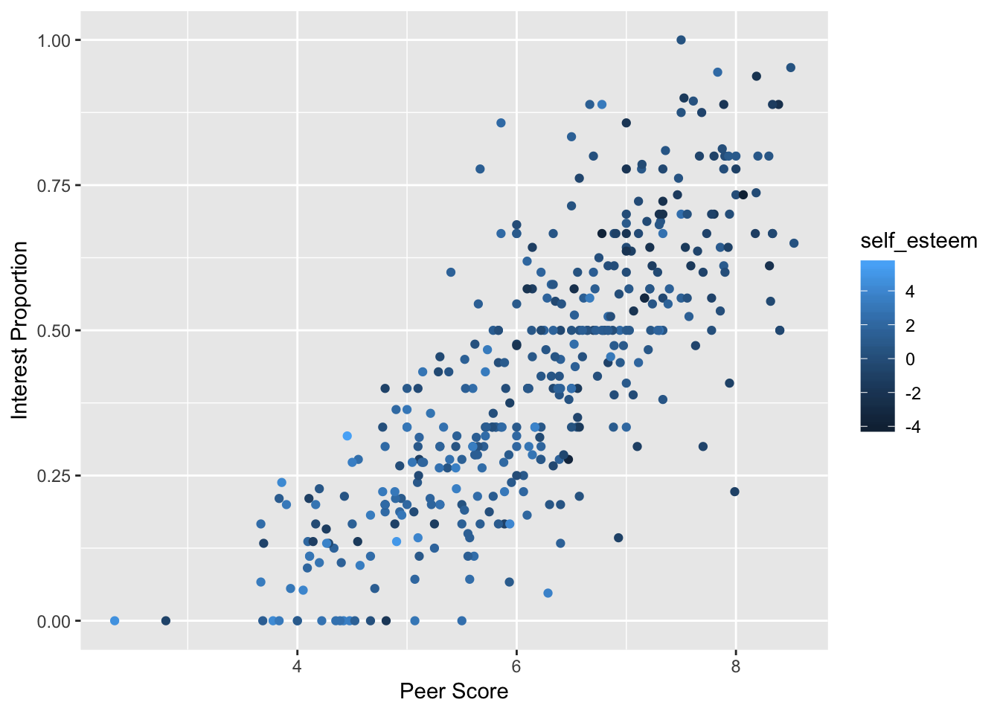

Chapter 7 Conclusion
7.1 Q2: How males and females’ expectation and self-evaluation differs?
From the plot we found that only a small proportion of people participate in the experiment for dating, which meant they may not treat the dating seriously and just choose their partners randomly. So in this section, we explored whether people really chose to date with someone that meet their expectation, or they made their decision basing on other factors, and is there a difference between male and female. Another thing we were interested in is would males and females’ self-evaluation be influenced after they dating with someone.
load("data/speed_dating.RData")
speed_dating %>% select(iid,goal) %>%
drop_na() %>%
mutate(goal=ifelse(goal==1,"fun",
ifelse(goal==2,"making friends",
ifelse(goal==3|goal==4,"dating",
ifelse(goal==5,"peer pressure","others"))))) %>%
unique() %>%
group_by(goal) %>%
summarise(frequency=n()) %>%
mutate(dating=ifelse(goal=="dating","Yes","No")) %>%
ggplot(aes(x=reorder(goal,frequency),y=frequency,fill=dating))+
geom_bar(stat = "identity")+
scale_fill_manual(values = c("grey50","lightblue"))+
labs(x="goal",title = "The Reason People Participate the Experiment")+
theme(legend.position = "none")
We define expectation as how people weight the importance of some attributes of their partners, and define self-evaluation of how people score their performance on those attributes. In this experiment people were asked their opinions about six attributes, which we descibed in section 2.2, to represent their expectation and five attributes to represent their self-evaluation (“share hobby” is dropped).
7.1.1 Expectations
7.1.1.1 How does males and females’ expectation change before and after datings?
In this part, we analyzed the weights of expectation in six attributes (attractive, sincere, intelligent, fun, ambitious and shared hobbies) between males and females, and how did the weight change after meeting someone.
gender_exp <- speed_dating %>%
select(iid,gender
,attr1_1:shar1_1 # exp weight to others-1
,pid
,attr1_2:shar1_2 # exp weight to others-3
# ,attr1_3:shar1_3 # exp weight to others-4
)
titles <- c("Expectation by Gender (before)",
"Expectation by Gender (one day later)",
"Expectation by Gender (weeks later)")
time <- c("before","one day later","weeks later")
gender_exp_bar=data.frame()
for (i in 1:2) {
gender_exp_tmp <- gender_exp %>%
drop_na() %>%
select(iid,gender,paste("attr1_",i,sep = ""):paste("shar1_",i,sep = "")) %>%
rename("Attractive"=paste("attr1_",i,sep = ""),
"Sincere"=paste("sinc1_",i,sep = ""),
"Intelligent"=paste("intel1_",i,sep = ""),
"Fun"=paste("fun1_",i,sep = ""),
"Ambitious"=paste("amb1_",i,sep = ""),
"Shared_hobbies"=paste("shar1_",i,sep = "")) %>%
mutate(gender = ifelse(gender == 0, "Female","Male"),time=time[i]) %>%
gather(key="attribute",value="weight",-iid,-gender,-time) %>%
unique()
gender_exp_tmp$attribute <- factor(gender_exp_tmp$attribute)
gender_exp_tmp$gender <- factor(gender_exp_tmp$gender)
gender_exp_tmp$time <- factor(gender_exp_tmp$time)
gender_exp_bar <- rbind(gender_exp_bar,gender_exp_tmp)
}
gender_exp_bar <- gender_exp_bar %>% group_by(gender,time,attribute) %>%
summarise(weight=mean(weight)) %>%
mutate(weight=weight/sum(weight)*100) %>%
ungroup()
gender_exp_bar %>%
ggplot(aes(x=gender,y=weight,fill=reorder(attribute,-weight)))+
geom_bar(position="stack", stat="identity")+
facet_wrap(gender_exp_bar$time)+
labs(fill = "Attributes",title = "Expectaion to Partners (by Gender)")
By analyzing the expectation before and after the dating by gender, we found:
For both female and male, intelligence, sincerity and fun are important attributes they expected to see in their partners.
Female attached much more importance to ambition of their partners than male do, while male attached much more importance to attractivity of the partners than female do.
There is no large difference of the expections after the datings. But the weight of attraction increased slightly in both female and male groups. To test whether these change last for a long time, we continued to do the following exploratory.
7.1.1.2 Does the changes last for a long time?
gender_exp <- speed_dating %>%
select(iid,gender
,attr1_1:shar1_1 # exp weight to others-1
,pid
,attr1_2:shar1_2 # exp weight to others-3
,attr1_3:shar1_3 # exp weight to others-4
)
titles <- c("Expectation by Gender (before)",
"Expectation by Gender (one day later)",
"Expectation by Gender (weeks later)")
time <- c("before","one day later","weeks later")
gender_exp_bar=data.frame()
for (i in 1:3) {
gender_exp_tmp <- gender_exp %>%
drop_na() %>%
select(iid,gender,paste("attr1_",i,sep = ""):paste("shar1_",i,sep = "")) %>%
rename("Attractive"=paste("attr1_",i,sep = ""),
"Sincere"=paste("sinc1_",i,sep = ""),
"Intelligent"=paste("intel1_",i,sep = ""),
"Fun"=paste("fun1_",i,sep = ""),
"Ambitious"=paste("amb1_",i,sep = ""),
"Shared_hobbies"=paste("shar1_",i,sep = "")) %>%
mutate(gender = ifelse(gender == 0, "Female","Male"),time=time[i]) %>%
gather(key="attribute",value="weight",-iid,-gender,-time) %>%
unique()
gender_exp_tmp$attribute <- factor(gender_exp_tmp$attribute)
gender_exp_tmp$gender <- factor(gender_exp_tmp$gender)
gender_exp_tmp$time <- factor(gender_exp_tmp$time)
gender_exp_bar <- rbind(gender_exp_bar,gender_exp_tmp)
}
gender_exp_bar <- gender_exp_bar %>% group_by(gender,time,attribute) %>%
summarise(weight=mean(weight)) %>%
mutate(weight=weight/sum(weight)*100) %>%
ungroup()
gender_exp_bar %>%
ggplot(aes(x=time,y=weight,color=gender,group=gender))+
geom_line()+
geom_point()+
facet_wrap(gender_exp_bar$attribute)+
labs(color = "Attributes",title = "Expectaion to Partners (by Gender)")+
theme(axis.text.x = element_text(angle=30,hjust = 1))
To check does the dating have a long-term influence on people’s expectations towards their partners, we did an analysis basing on the observations who answered the questions two weeks after. Although only part of the participants answered the questions again two weeks after the dating, there is still 6800 records (449 individuals). From the graph we found that one-time dating only has a short-term influence on people’s expectations towards their partners. As time pass by, their expectations tended to come back to the level before the datings.
This finding is reasonable since they were only one-time datings. However, to get a conclusion about whether people’s mind change after dating, we need to seperate the groups into matched and unmatched.
7.1.1.3 Does match influence changes in expectation?
gender_exp <- speed_dating %>%
select(iid,gender
,attr1_1:shar1_1 # exp weight to others-1
,pid,match
,attr1_2:shar1_2 # exp weight to others-3
# ,attr1_3:shar1_3 # exp weight to others-4
)
titles <- c("Expectation by Gender (before)",
"Expectation by Gender (one day later)",
"Expectation by Gender (weeks later)")
time <- c("before","one day later","weeks later")
gender_exp_bar=data.frame()
for (i in 1:2) {
gender_exp_tmp <- gender_exp %>%
drop_na() %>%
select(iid,gender,match,paste("attr1_",i,sep = ""):paste("shar1_",i,sep = "")) %>%
rename("Attractive"=paste("attr1_",i,sep = ""),
"Sincere"=paste("sinc1_",i,sep = ""),
"Intelligent"=paste("intel1_",i,sep = ""),
"Fun"=paste("fun1_",i,sep = ""),
"Ambitious"=paste("amb1_",i,sep = ""),
"Shared_hobbies"=paste("shar1_",i,sep = "")) %>%
mutate(gender = ifelse(gender == 0, "Female","Male"),
match = ifelse(match == 1, "matched","unmatched"),
time=time[i]) %>%
gather(key="attribute",value="weight",-iid,-gender,-time,-match) %>%
unique()
gender_exp_tmp$attribute <- factor(gender_exp_tmp$attribute)
gender_exp_tmp$gender <- factor(gender_exp_tmp$gender)
gender_exp_tmp$time <- factor(gender_exp_tmp$time)
gender_exp_tmp$match <- factor(gender_exp_tmp$match)
gender_exp_bar <- rbind(gender_exp_bar,gender_exp_tmp)
}
gender_exp_bar <- gender_exp_bar %>% group_by(gender,time,match,attribute) %>%
summarise(weight=mean(weight)) %>%
mutate(weight=weight/sum(weight)*100) %>%
ungroup() %>%
spread(time,weight) %>%
mutate(change=`one day later`-before)
gender_exp_bar %>%
ggplot(aes(x=attribute,y=change,fill=attribute))+
geom_bar(stat = "identity")+
# geom_point()+
facet_grid(gender_exp_bar$gender~gender_exp_bar$match)+
labs(color = "Attributes",title = "Expectaion to Partners (by Gender and Match)")+
theme(axis.text.x = element_text(angle=30,hjust = 1))
There is no obvious difference between the expections of matched group and unmatched groups, which means whether people are on a dating or not does not influence their expections to their partners (if they are not dating secretly or with another person except for the one they meet in this event).
7.1.2 Self-evaluation
7.1.2.1 How does self-evaluation change before and after datings?
gender_eva <- speed_dating %>%
select(iid,gender,
attr3_1:amb3_1 # self-evaluate-1 (self)-1
,pid
,attr3_2:amb3_2 # self-evaluate-1 (self)-3
# ,attr3_3:amb3_3 # self-evaluate-1 (self)-4
)
time <- c("before","one day later","weeks later")
gender_eva_bar=data.frame()
for (i in 1:2) {
gender_eva_tmp <- gender_eva %>%
drop_na() %>%
select(iid,gender,paste("attr3_",i,sep = ""):paste("amb3_",i,sep = "")) %>%
rename("Attractive"=paste("attr3_",i,sep = ""),
"Sincere"=paste("sinc3_",i,sep = ""),
"Intelligent"=paste("intel3_",i,sep = ""),
"Fun"=paste("fun3_",i,sep = ""),
"Ambitious"=paste("amb3_",i,sep = "")) %>%
mutate(gender = ifelse(gender == 0, "Female","Male"),time=time[i]) %>%
gather(key="attribute",value="score",-iid,-gender,-time) %>%
unique()
gender_eva_tmp$attribute <- factor(gender_eva_tmp$attribute)
gender_eva_tmp$gender <- factor(gender_eva_tmp$gender)
gender_eva_tmp$time <- factor(gender_eva_tmp$time)
gender_eva_bar <- rbind(gender_eva_bar,gender_eva_tmp)
}
tmp <- gender_eva_bar %>%
spread(time,score) %>%
mutate(change=`one day later`-before) %>%
group_by(gender,attribute,change) %>%
summarise(n=n()) %>%
mutate(n=ifelse(gender=="Female",-n,n))
breaks_values <- pretty(tmp$n)
tmp %>%
ggplot(aes(x=change,y=n,fill=gender))+
geom_bar(stat = "identity")+
facet_grid(~tmp$attribute)+
scale_y_continuous(breaks = breaks_values,
labels = abs(breaks_values))+
labs(fill = "Gender",
title = "Self-evaluation Changes (by Gender)",
y="frequency")+
theme(axis.text.x = element_text(angle = 30, hjust = 1),legend.position="bottom")+
coord_flip()
7.1.2.2 Does match influence changes in self-evaluation?
gender_eva <- speed_dating %>%
select(iid,gender,
attr3_1:amb3_1 # self-evaluate-1 (self)-1
,pid,match
,attr3_2:amb3_2 # self-evaluate-1 (self)-3
,attr3_3:amb3_3 # self-evaluate-1 (self)-4
)
time <- c("before","one day later","weeks later")
gender_eva_bar=data.frame()
for (i in 1:2) {
gender_eva_tmp <- gender_eva %>%
drop_na() %>%
select(iid,gender,match,paste("attr3_",i,sep = ""):paste("amb3_",i,sep = "")) %>%
rename("Attractive"=paste("attr3_",i,sep = ""),
"Sincere"=paste("sinc3_",i,sep = ""),
"Intelligent"=paste("intel3_",i,sep = ""),
"Fun"=paste("fun3_",i,sep = ""),
"Ambitious"=paste("amb3_",i,sep = "")) %>%
mutate(gender = ifelse(gender == 0, "Female","Male"),
match = ifelse(match == 1, "matched","unmatched"),
time=time[i]) %>%
gather(key="attribute",value="score",-iid,-gender,-time,-match) %>%
unique()
gender_eva_tmp$attribute <- factor(gender_eva_tmp$attribute)
gender_eva_tmp$gender <- factor(gender_eva_tmp$gender)
gender_eva_tmp$time <- factor(gender_eva_tmp$time)
gender_eva_tmp$match <- factor(gender_eva_tmp$match)
gender_eva_bar <- rbind(gender_eva_bar,gender_eva_tmp)
}
tmp <- gender_eva_bar %>%
spread(time,score) %>%
mutate(change=`one day later`-before) %>%
group_by(gender,attribute,match,change) %>%
summarise(n=n()) %>%
mutate(n=ifelse(gender=="Female",-n,n))
breaks_values <- pretty(tmp$n)
tmp %>%
ggplot(aes(x=change,y=n,fill=gender))+
geom_bar(stat = "identity")+
facet_grid(tmp$match~tmp$attribute)+
scale_y_continuous(breaks = breaks_values,
labels = abs(breaks_values))+
labs(fill = "Gender",
title = "Self-evaluation Changes (by Gender)",
y="frequency")+
theme(legend.position="bottom")+
coord_flip()
There is no large difference in self-evaluation regrading to the five attributes (ambitious, attractive, fun, intelligent and sincere) between females and males before and after the datings, nor the matching results influence their self-evaluation.
7.1.2.3 Does the expectation influence whether or not they decide to date?
Usually people choose to date with someone because he/she has some attributes that attract them. It is likely that people will choose to date with someone who have the expective attributes. To test this assumption, we did the following exploratory.
gender_mat <- speed_dating %>%
select(iid,gender
,attr1_1:shar1_1 # exp weight to others-1
,attr3_1:amb3_1 # self-evaluate-1 (self)-1
,pid,match,dec_o,samerace,goal
,attr:shar,like,prob # score to others
) %>%
drop_na() %>%
mutate(gender = ifelse(gender == 0, "Female","Male"),
dec_o=ifelse(dec_o==0,"No","Yes"),
goal=ifelse(goal==3|goal==4,"Dating","Other")
)
gender_mat$gender <- factor(gender_mat$gender)
gender_mat$dec_o <- factor(gender_mat$dec_o)
gender_mat$goal <- factor(gender_mat$goal)tmp <- gender_mat %>% select(iid,gender,dec_o,samerace,
attr:shar,like,prob,goal) %>% # score to others
mutate(score=(attr+sinc+intel+fun+amb+shar)*100/60) %>%
group_by(gender,goal,score,dec_o) %>%
summarise(n=n()) %>%
mutate(n=ifelse(dec_o=="Yes",n,-n))
breaks_values <- pretty(tmp$n)
tmp %>%
ggplot(aes(x=score,y=n,width=1,fill=dec_o))+
geom_bar(stat = "identity")+
facet_grid(tmp$gender~tmp$goal,scales = "free")+
scale_y_continuous(breaks = breaks_values,
labels = abs(breaks_values))+
scale_fill_discrete(name="decision")+
labs(title = "Does people date with higher score people?",
y="frequency")+
theme(legend.position="bottom")+
coord_flip()
If people made their decisions based on the score they gave, for people they said “yes”, the score for them should be higher than for those they said “no”. But according to the graph, there is no difference between the distribution of the score between “yes” and “no” groups, even if we seperate people by their goal of participating the event excpet for the female groups whose goal is dating. In the female groups whose goal is dating, they tent to date with people who had higher scores.
7.1.3 What influence people decisions?
gender_mat %>% select(iid,gender,dec_o,samerace,
attr:shar,goal,like,prob) %>% # score to others
mutate(score=(attr+sinc+intel+fun+amb+shar)*100/60) %>%
ggplot(aes(like,score,color=gender))+
geom_point()+
labs(title = "Scores and Likes")
The graph above shows that score and a good impression (like) of a person has a positive relationship, which means if scores did not influence people’s decisions, a good impression mattered little.
# prob: how likely do you think others will say yes to you?
tmp <- gender_mat %>% mutate(like=round(like)) %>%
group_by(gender,like,dec_o) %>%
summarise(n=n()) %>%
spread(dec_o,n) %>%
mutate(yn_ratio=Yes/No)
p1 <- tmp[!is.na(tmp$yn_ratio),] %>%
ggplot(aes(x=like,y=yn_ratio,color=gender))+
geom_line()+
geom_point()+
scale_x_continuous(breaks = seq(0,10,2))+
labs(x="like",y="yes-no ratio of decisions")
p2 <- tmp[!is.na(tmp$yn_ratio),] %>%
ggplot(aes(x=like,y=Yes+No,fill=gender))+
geom_bar(stat="identity",position="dodge")+
scale_x_continuous(breaks = seq(0,10,2))+
labs(x="like",y="frequency")
gridExtra::grid.arrange(p1,p2,nrow=1,top="Likes Does not Influence Decisions")
tmp <- gender_mat %>% mutate(prob=round(prob)) %>%
group_by(gender,prob,dec_o) %>%
summarise(n=n()) %>%
spread(dec_o,n) %>%
mutate(yn_ratio=Yes/No)
par(mfrow=c(1,2))
p3 <- tmp[!is.na(tmp$yn_ratio),] %>%
ggplot(aes(x=prob,y=yn_ratio,color=gender))+
geom_line()+
geom_point()+
scale_x_continuous(breaks = seq(0,10,2))+
labs(x="probability of being chosen",y="yes-no ratio of decisions")
p4 <- tmp[!is.na(tmp$yn_ratio),] %>%
ggplot(aes(x=prob,y=Yes+No,fill=gender))+
geom_bar(stat="identity",position="dodge")+
scale_x_continuous(breaks = seq(0,10,2))+
labs(x="probability of being chosen",y="frequency")
gridExtra::grid.arrange(p3,p4,nrow=1,top="Others' Opinions Influence Decisions")
The first graph shows how much do people like their partners. And the second graph shows how likely do people think their partner would like to date with them, namely, say “yes” to them. The graph on the right side is the number of people who gave the score. We use yes-no ratio (the number of people who said “yes” against those who said “no”) to denote the decision of the group. If the ratio is larger than one, means among the people who gave the score, the majority of them want to date with partners.
From the graph, we confirmed that whether or not a person like his/her partner did not have a large influence on his/her decision, namely, they did date with someone they like best. Instead, they tended to choose those who might like them. For females, if they thought a male was 70% likely to say “yes” to themselves, they will also say “yes”. For males, if they thought a female was 80% likely to say “yes” to themselves, they will also say “yes”.
7.2 Question: Will backrgound and common interests influence the match? Which feature is the most influential?
To answer this question, we have to look at background and common interests seperately. Background includes three features: race, from, and field. We can do so by comparing the chance of matching by conditioning on whether they are from the same race, same from (location), and same field.
Data Cleaning:
we would like to append 6 indicator columns that indicates whether this person and his/her partner share that feature in common (actually 5 because samerace is available in the original data).
load('data/speed_dating.RData')
# get feature values of the partner
for (i in 1:nrow(speed_dating)) {
# for each row, get partner's id
pid = speed_dating[i, 'pid']
# add temporary columns that holds partner's location, field, sports, reading, movies
speed_dating[i, 'plocation'] = speed_dating[which(speed_dating$iid == pid)[1], 'from']
speed_dating[i, 'pfield'] = speed_dating[which(speed_dating$iid == pid)[1], 'field']
}
# append indicator columns for location, field, and income
speed_dating['samelocation'] <- if_else(speed_dating$from == speed_dating$plocation, 'Yes', 'No')
speed_dating['samefield'] <- if_else(speed_dating$field == speed_dating$pfield, 'Yes', 'No')
# get the feature values of all the hobbies of the partner
f <- function(x){
tmp <- data.frame("holder" = 1:dim(speed_dating)[1])
result <- data.frame("holder" = 1:dim(speed_dating)[1])
for (i in 1:nrow(speed_dating)){
pid = speed_dating[i, 'pid']
tmp[i,1] <- speed_dating[which(speed_dating$iid == pid)[1], x]
}
for (i in 1:nrow(speed_dating)) {
result[i,1] <- if_else((tmp[i,1] >=7 & speed_dating[i,x]>=7), 'Yes', 'No')
}
return(result)
}
# append the newly added columns to the original data frame
names = colnames(speed_dating %>% select(sports:yoga))
common_features <- as.data.frame(do.call(cbind,lapply(names, f)))
colnames(common_features)<- paste0('same',colnames(speed_dating %>% select(sports:yoga)))
speed_dating <- cbind(speed_dating, common_features)
speed_dating <- speed_dating[, !duplicated(colnames(speed_dating))]
# drop unecessary columns and missing data
drops = c('plocation', 'pfield')
speed_dating <- select(speed_dating, -drops)
keeps = append(paste0('same',colnames(speed_dating %>% select(sports:yoga))), c('samelocation', 'samefield'))
speed_dating <- speed_dating[complete.cases(speed_dating[,keeps]), ]#save(speed_dating_q1, file = "data/speed_dating_q1.Rdata")
load(file = "data/speed_dating_q1.Rdata")
speed_dating <- speed_dating_q1
names = colnames(speed_dating %>% select(sports:yoga))# for mosaic plot
# create a clean dataframe for each common feature
sameracedata = speed_dating %>% group_by(samerace, match) %>% summarise(Freq = n()) %>% ungroup() %>% mutate(samerace = if_else(samerace == 1, "Yes", "No")) %>% mutate(match = if_else(match == 1, "Yes", "No"))
samelocationdata = speed_dating %>% group_by(samelocation, match) %>% summarize(Freq = n()) %>% ungroup() %>% mutate(match = if_else(match == 1, "Yes", "No"))
samefielddata = speed_dating %>% group_by(samefield, match) %>% summarize(Freq = n()) %>% ungroup() %>% mutate(match = if_else(match == 1, "Yes", "No"))
samesportsdata = speed_dating %>% group_by(samesports, match) %>% summarize(Freq = n()) %>% ungroup() %>% mutate(match = if_else(match == 1, "Yes", "No"))
samereadingdata = speed_dating %>% group_by(samereading, match) %>% summarize(Freq = n()) %>% ungroup() %>% mutate(match = if_else(match == 1, "Yes", "No"))
samemoviesdata = speed_dating %>% group_by(samemovies, match) %>% summarize(Freq = n()) %>% ungroup() %>% mutate(match = if_else(match == 1, "Yes", "No"))
cat(
paste(
'<script>
var sameracedata = ',toJSON(sameracedata),';
var samelocationdata = ',toJSON(samelocationdata),';
var samefielddata = ',toJSON(samefielddata),';
var samesportsdata = ',toJSON(samesportsdata),';
var samereadingdata = ',toJSON(samereadingdata),';
var samemoviesdata = ',toJSON(samemoviesdata),';
</script>'
, sep="")
)We then look at all the available features that could be of common interest in the dataset, and see if any of those features heavily impacts the chances of getting matched.
calc_diff <- function(y){
tmp <- speed_dating %>% group_by_(y, 'match') %>% summarize(Freq = n()) %>% ungroup() %>% mutate(match = if_else(match == 1, "Yes", "No"))
no_rate <- tmp[2,3]/(tmp[2,3]+tmp[1,3])
yes_rate <- tmp[4,3]/(tmp[3,3]+tmp[4,3])
hobby <- substring(as.character(y), 5)
result <- data.frame("hobby" = c(hobby,hobby), "share_hobby" = c("Yes", "No"), "Freq" = c(0,0))
result[1,3] <-yes_rate*100
result[2,3] <-no_rate*100
return(result)
}
cd_df <- do.call(rbind,lapply(paste0('same',colnames(speed_dating %>% select(sports:yoga))),calc_diff))
ggplot(cd_df,aes(x=Freq,y=fct_reorder2(hobby, share_hobby == 'Yes',Freq, .desc=FALSE), color = fct_rev(share_hobby)))+geom_point(size = 3)+ylab("Hobbies")+xlab("Percent (%)")+ggtitle("Chances of Matching")+labs(color="Participants Share this Hobby")+theme(axis.text.x = element_text(size = 14), axis.title.x = element_text(size = 16),
axis.text.y = element_text(size = 14), axis.title.y = element_text(size = 16),
plot.title = element_text(size = 20, face = "bold"),
legend.title = element_text(size=16),
legend.text = element_text(size=14))
7.3 Question: do people with excess self-esteem get more romantic interest?
Self-enhancement is one kind of motivation that makes people feel good and boost their confidence (https://en.wikipedia.org/wiki/Self-enhancement). Epley and Whitchurch’s work is one evidence supporting the idea that people tend to see themselves better that the reality (https://journals.sagepub.com/doi/abs/10.1177/0146167208318601?journalCode=pspc). The phenomenon is also known as “illusory superiority”, where the majority of people evaluates themself as better than the average.
It is widely believed that confident people preform better in various tasks including in relationships (see Link). This section of the analysis focuses on this idea. Specifically, we want to know if confident people get more interests during the Speed Dating session.
Given the dataset, we define confidence, or excess self-esteem, as how much higher a subject evaluates itself than other people rate the subject (peer score). That is, the varaible excess self-esteem is calculated by subtracting an averaged evaluation score given by others from the score given to self. A large positive difference indicates highly excess self-esteem. A large negative difference suggests very low self-esteem. The variable is called self-esteem in the analysis and peer score is an average score a subject received from other people.

One distinct characteristics of participants is gender. However, the previous question found no difference between genders. Moreover, this characteristics does not distinquish subjects in terms of their excess self-esteem. Below are distribution of score difference for each gender in each attribute. Their distribution are similar, peaking at around 1 with almost identical spread.
attr_list <- c("amb"="Ambitious", "attr"="Attractive", "fun"="Fun", "intel"="Intelligent", "sinc"="Sincere")
ggplot(eval_df %>% mutate(gender = ifelse(gender == 0, "Female", "Male"),
gender = as.factor(gender),
attr = attr_list[attr]), aes(x=diff_before, fill = gender)) +
geom_density(alpha = 0.5) +
ggtitle("Histogram of Evaluation Ratio") +
xlab("Ratio") +
facet_grid(~attr)
When self-esteem is plotted against the proportion of people who want to meet with a subject again, referred to as interest proportion, the only small difference between gender is that female participants tend to get higher interest proportion than male participants. This is shown by more red dots locating at the top and more blue dots at the bottom of the graph. However, dots at the top and the bottom constitute only a small number of participants. Therefore, this analysis treat both genders collectively.
## color by gender
ggplot(diff_df, aes(x=diff_before, y = proportion, color = gender)) +
geom_point(alpha = 0.5) +
facet_grid(~attr) +
xlab("Self Esteem") +
ylab("Interest Proportion")
The plots above also suggest that people with excess self-esteem generally have low interest proportion. The correlation is stronger in fun and attractive, with the most negative correlation in attractive. That is, a participant with lower self-esteem in his/her own attractive and fun tend to get more romatic interest from the others.
cor_list <- lapply(eval_df$attr %>% unique(), function(a){
attr_eval_df <- eval_df%>% ungroup() %>% filter(attr == a) %>% select(diff_before, proportion)
c <- cor(attr_eval_df$diff_before, attr_eval_df$proportion)
return(data.frame("Attribute"=a, "Correlation" = c))
})
attr_list <- c("attr"="Attractive", "sinc"="Sincere", "amb"="Ambitious", "fun"="Fun", "intel"="Intelligent")
cor_df <- do.call(rbind, cor_list) %>% mutate(Attribute = attr_list[Attribute])
cor_df %>% kable() %>% kable_styling()| Attribute | Correlation |
|---|---|
| Attractive | -0.1857069 |
| Sincere | -0.4475117 |
| Ambitious | -0.2780918 |
| Fun | -0.3056818 |
| Intelligent | -0.1804723 |
The fact that attractive has the strongest correlation with interest proportion should not be surprising since it is the attribute that people look for the most in their partner (discussed in previous question). The next part narrows its focus down to attractive attribute only.
Below is a plot of peer score against interest proportion. Data points are colored by self esteem. Darker color indicates a person with lower self-esteem.
ggplot(diff_df %>% filter(attr == "attr") %>%
rename(self_esteem = diff_before),
aes(x=peer_score , y = proportion, color = self_esteem)) +
geom_point() +
xlab("Peer Score") +
ylab("Interest Proportion")
The plot shows a linear relationship between peer evaluation score and interest proportion. A person who, othter people think, is attractive gain more romantic interest proportion, especially when average score is below 5. The linear relationship becomes weaker for those with score larger than 6.
We also found that people who are less confident in their attractiveness tend to get more interests. This is shown by darker dots at the top right of the plot. Poeple with low self esteem gain more proportion of interest.
Before jumping into a conclusion that being attractive is what matters, we inspect other characteristics of subjects. We are curious whether there are some confounding varaibles (other than what has been explored in the previous questions) that get a subject more romantic interest. All the graphs below are relationships between peer score on attractive and interest proportion. Dots are colored by other characterisitcs that we want to inspect.
7.3.0.1 Race
race_list <- c("Black/African American", "European/Caucasian-American", "Latino/Hispanic American",
"Asian/Pacific Islander/Asian-American", "Native American", "Other")
pl1 <- ggplot(diff_df %>% filter(attr == "attr") %>%
select(iid, race) %>%
group_by(race) %>%
summarize(cnt = n()) %>%
mutate(race = race_list[race]), aes(x = fct_reorder(race, cnt), y = cnt, fill = race)) +
geom_col() + coord_flip() +
xlab("") +
ylab("count") +
theme(legend.position = "none")
pl2 <- ggplot(diff_df %>% filter(attr == "attr") %>%
mutate(race = race_list[race]),
aes(x=peer_score, y = proportion, color = race)) +
geom_point(alpha = 1) +
xlab("Peer Score for Attractive") +
ylab("Interest Proportion")
ggplotly(pl1, tooltip = c("cnt"))We find no pattern among proportion, peer_score, and race.
7.3.0.2 Field of Study
field_list <- c("Law", "Math", "Social Science", "Psychologist", "Medical Science", "Pharmaceuticals and Bio Tech",
"Engineering", "English/Creative Writing/ Journalism", "History/Religion/Philosophy",
"Business/Econ/Finance", "Education, Academia", "Biological Sciences/Chemistry/Physics",
"Social Work", "Undergrad/undecided", "Political Science/International Affairs", "Film",
"Fine Arts/Arts Administration", "Languages", "Architecture", "Other")
pl1 <- ggplot(diff_df %>% filter(attr == "attr", !is.na(field_cd)) %>%
select(iid, field_cd) %>%
group_by(field_cd) %>%
summarize(cnt = n()) %>%
mutate(field_cd = field_list[field_cd]),
aes(x = fct_reorder(field_cd, cnt), y = cnt, fill = field_cd)) +
geom_col() + coord_flip() +
xlab("") +
ylab("count") +
theme(legend.position = "none")
## field X
pl2 <- ggplot(diff_df %>%
filter(attr == "attr", !is.na(field_cd)) %>%
mutate(field_cd = field_list[field_cd]),
aes(x=peer_score, y = proportion, color = field_cd)) +
geom_point(alpha = 1) +
xlab("Attractive Peer Score") +
ylab("Interest Proportion")
ggplotly(pl1, tooltip = c("cnt"))fc <- read.csv("data/field_cat.csv") %>%
mutate(cd = row_number())
cat_list <- fc$cat %>% as.character()
names(cat_list) <- fc$cd
diff_df <- diff_df %>% mutate(field_cate_cd = cat_list[field_cd]) In addition to considering individual majors, we create major categories to see any general pattern that involves in school majors.
pl1 <- ggplot(diff_df %>% filter(attr == "attr", !is.na(field_cate_cd)) %>%
select(iid, field_cate_cd)%>%
group_by(field_cate_cd) %>%
summarize(cnt = n()),
aes(x = fct_reorder(field_cate_cd, cnt), y = cnt, fill = field_cate_cd)) +
geom_col() + coord_flip() +
xlab("") +
ylab("count") +
theme(legend.position = "none")
pl2 <- ggplot(diff_df %>% filter(attr == "attr", !is.na(field_cate_cd)),
aes(x=peer_score, y = proportion, color = field_cate_cd)) +
geom_point(alpha = 1) +
theme(legend.position = "none") +
xlab("Attractive Peer Score") +
ylab("Interest Proportion")
ggplotly(pl1, tooltip = c("cnt"))There is also no pattern among proportion, peer_score, and study field.
As far as we know, attractiveness is the only characteristic that have the strongest correlation with interest propotion. In conclusion, we found that people with low self esteem in their attractiveness gain more romantic interest after the event.